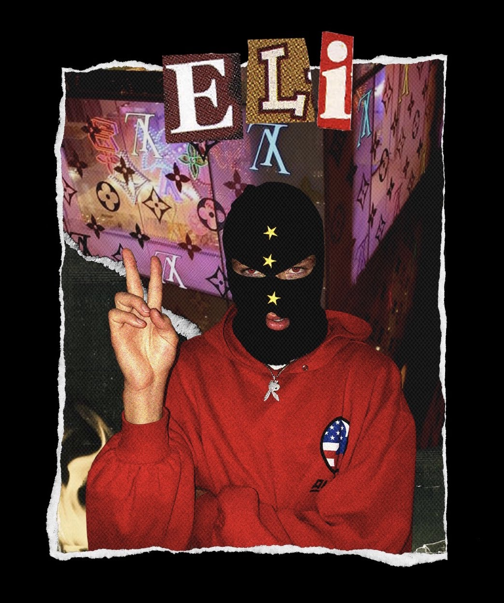
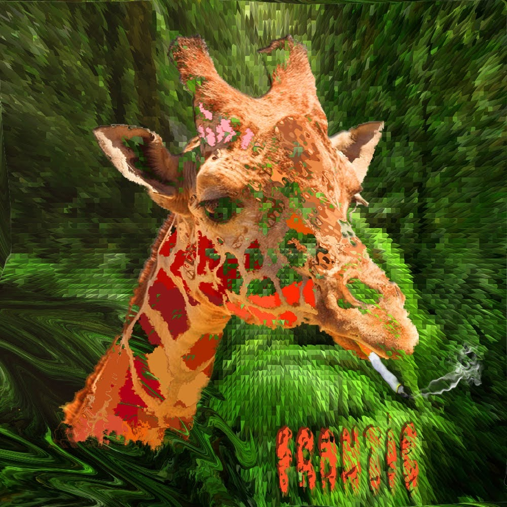

Welcome to my website! My name is Will Smyth, I am from Duluth Minnesota and am currently a sophomore at University of Montana. I am an environmental studies major and media arts major. A double major can be a bit much at times but I am very interested in the two. I spend most of my free time in the outdoors going on runs, mountain biking, skiing, skateboarding with friends, or just about anything else I can find to do. Other than the outdoors I spend my time creating art. I spend a lot of time creating in Illustrator and Photoshop along with editing video in Premier and After Effects. I have also recently became interested in screen printing where I am able to bring some of my art to paper in an interesting way.
Here is some of my Artwork


Contact